Show the code
library(dplyr) # manipulation des donnéeslibrary(dplyr) # manipulation des donnéesbeta1_MCO <- function(x, y) {
sum((x - mean(x)) * (y - mean(y))) / sum((x - mean(x))^2)
}
beta0_MCO <- function(x, y) {
mean(y) - beta1_MCO(x, y) * mean(x)
}beta1_RI <- function(x, y) {
sum((y - mean(y))^2) / sum((x - mean(x)) * (y - mean(y)))
}
beta0_RI <- function(x, y) {
mean(y) - beta1_RI(x, y) * mean(x)
}set.seed(140400)On va illustrer par des simulations les propriétés des estimateurs des coefficients de la régression simple par la méthode MCO et par la méthode inverse.
Pour cela on fera sur deux parties disticntes :
Partie 1 : iniiation à l’estimation des coefficients de régression via des fonctions construites “à la main”
Partie 2 : utilisation de la fonction lm pour l’estimation des coefficients de régression
On considère deux échantillons de \(n\) variables \((X_1, . . . , X_n)\) et \((Y_1, . . . , Y_n)\). On suppose que les \((X_1, . . . , X_n)\) sont connus. On considère le modèle de régression simple \[Y_i = \beta_0 + \beta_1 X_i + \varepsilon_i\] où les \(\varepsilon_i\) sont i.i.d de moyenne nulle, non corrélées et de variance \(\sigma^2\) .
On va rappeler que les coeffictients MCO sont de la forme :
\(\hat{\beta}_{1\text{MCO}} = \frac{\sum_{i=1}^n(X_i - \bar{X})(Y_i - \bar{Y})}{\sum_{i=1}^{n}(X_i - \bar{X})^2} = \frac{S_{XY}}{S_{XX}}\)
\(\hat{\beta}_{0\text{MCO}} = \bar{Y} + \hat{\beta}_{1\text{MCO}}\bar{X}\)
Maintenant, on veut récupérer la formule des coefficients de régression inverse. Pour cela, on part d’une transformation du modèle linéaire précédent :
\[X_i = \frac{-\beta_0}{\beta_1} + \frac{1}{\beta_1}Y_i + \varepsilon_i'\]
Ce qui nous donne les coeffficients \(\alpha_0 = \frac{-\beta_0}{\beta_1}\) et \(\alpha_1 = \frac{1}{\beta_1}\). Et si on procède à une estimation MCO sur ces coefficients, on obtient :
\(\hat{\alpha}_{1\text{MCO}} = \frac{S_{XY}}{S_{YY}}\)
\(\hat{\alpha}_{0\text{MCO}} = \bar{X} + \hat{\alpha}_{1\text{MCO}}\bar{Y}\)
Or, on a aussi \(\hat{\alpha}_0 = \frac{-\hat{\beta}_0}{\hat{\beta}_1}\) et \(\hat{\alpha}_1 = \frac{1}{\hat{\beta}_1}\).
Ce qui nous permet donc d’arriver aux estimateurs de régression inverse
\(\hat{\beta}_{1\text{RI}} = \frac{S_{YY}}{S_{XY}}\)
\(\hat{\beta}_{0\text{RI}} = \bar{Y} + \hat{\beta}_{1\text{MCO}}\bar{X}\)
Maintenant qu’on a ces formule, on va se baser sur des données présentes dans le fichier X.txt et le but sera de calculer les estimateurs précédents sur \(B=100\) échantiloons de \((Y_i)_i\) définis par \(Y_i = 10 + 2X_i + \varepsilon_i\), les \(\varepsilon_i\) sont gaussiennes i.i.d de moyenne nulle, non corrélées et de variance \(\sigma^2=1\).
X_data <- readr::read_csv("../Data/X.txt")New names:
Rows: 100 Columns: 2
── Column specification
──────────────────────────────────────────────────────── Delimiter: "," dbl
(2): ...1, x
ℹ Use `spec()` to retrieve the full column specification for this data. ℹ
Specify the column types or set `show_col_types = FALSE` to quiet this message.
• `` -> `...1`## Parameters
B <- 100
beta0 <- 10
beta1 <- 2
X_data$epsilon <- rnorm(B, 0, 1)
## Model
X_data$Y <- 10 + 2*X_data$x + X_data$epsilon# on fait nos estimateur MCO inverses
# beta1_RI(X_data$x, 10 + 2*X_data$x + rnorm(100, 0, 1))
# beta0_RI(as.numeric(X_data$x), as.numeric(10 + 2*X_data$x + rnorm(100, 0, 1)))
#> beta1RI(as.numeric(data$x), as.numeric(data$Y))
#[1] 2.500503
#> beta0RI(as.numeric(data$x), as.numeric(data$Y))
#[1] 9.892161
# beta1_MCO(as.numeric(X_data$x), as.numeric(X_data$Y))
# beta0_MCO(as.numeric(X_data$x), as.numeric(X_data$Y))
#> beta1MCO(as.numeric(data$x), as.numeric(data$Y))
#[1] 1.843383
#> beta0MCO(as.numeric(data$x), as.numeric(data$Y))
#[1] 9.89286
## nos esimateurs sont pas loin des beta1 et beta0
estim <- data.frame(
beta1_RI = beta1_RI(X_data$x, 10 + 2 * X_data$x + rnorm(B, 0, 1)),
beta0_RI = beta0_RI(as.numeric(X_data$x), as.numeric(10 + 2 * X_data$x + rnorm(100, 0, 1))),
beta1_MCO = beta1_MCO(as.numeric(X_data$x), as.numeric(X_data$Y)),
beta0_MCO = beta0_MCO(as.numeric(X_data$x), as.numeric(X_data$Y))
)
estim %>% DT::datatable()Résultats
On est très proche des résultats recherchées
Tracons les boxplot des estimateurs obtenus (on tracera les vraies valeurs des paramètres).
# X_data$B1RI = 0
# X_data$B0RI = 0
for (i in 1:B){
X_data$B1RI[i] <- beta1_RI(X_data$x, 10 + 2*X_data$x + rnorm(B, 0, 1))
X_data$B0RI[i] <- beta0_RI(as.numeric(X_data$x), as.numeric(10 + 2*X_data$x + rnorm(B, 0, 1)))
}Warning: Unknown or uninitialised column: `B1RI`.Warning: Unknown or uninitialised column: `B0RI`.# X_data$B1MCO = 0
# X_data$B0MCO = 0
for (i in 1:B){
X_data$B1MCO[i] <- beta1_MCO(X_data$x, 10 + 2*X_data$x + rnorm(B, 0, 1))
X_data$B0MCO[i] <- beta0_MCO(as.numeric(X_data$x), as.numeric(10 + 2*X_data$x + rnorm(B, 0, 1)))
}Warning: Unknown or uninitialised column: `B1MCO`.Warning: Unknown or uninitialised column: `B0MCO`.boxplot(X_data$B0RI, X_data$B0MCO,
main = "Estimation de Beta0 avec une erreur ~N(0,1)",
xlab = "xlab",
#ylab = "",
names = c("B0RI", "B0MCO"),
col = c("purple","pink"),
border = "brown",
horizontal = TRUE,
notch = TRUE)
abline(v = 10, col = 2)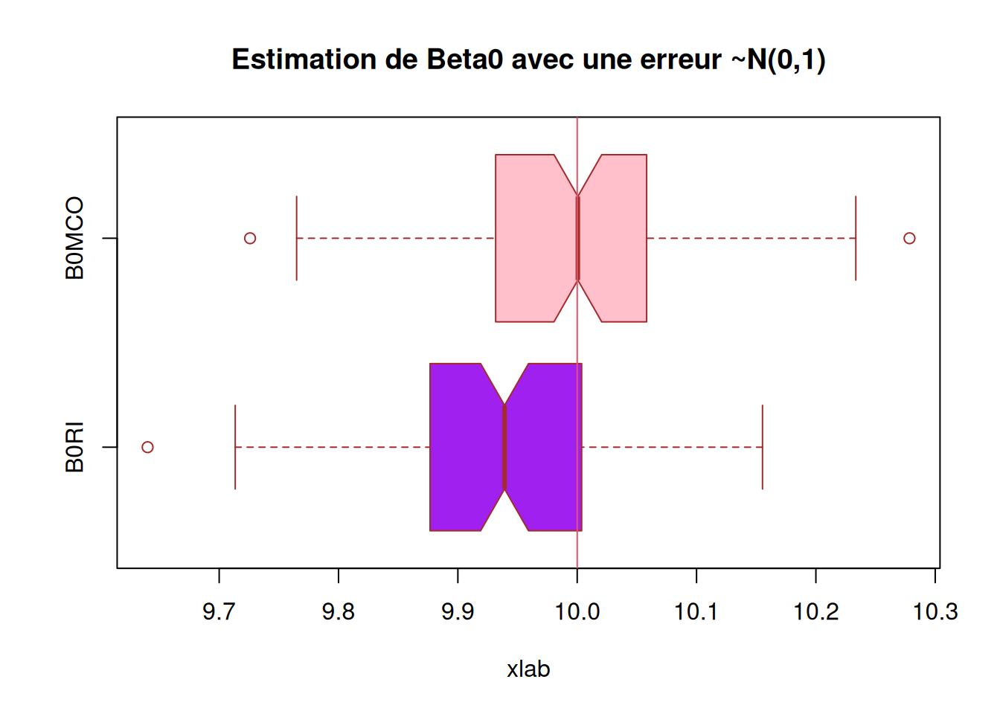
boxplot(X_data$B1RI, X_data$B1MCO,
main = "Estimation de Beta1 avec une erreur ~N(0,1)",
xlab = "xlab",
#ylab = "",
names = c("B1RI", "B1MCO"),
col = c("purple","pink"),
border = "brown",
horizontal = TRUE,
notch = TRUE)
abline(v = 2, col = 2)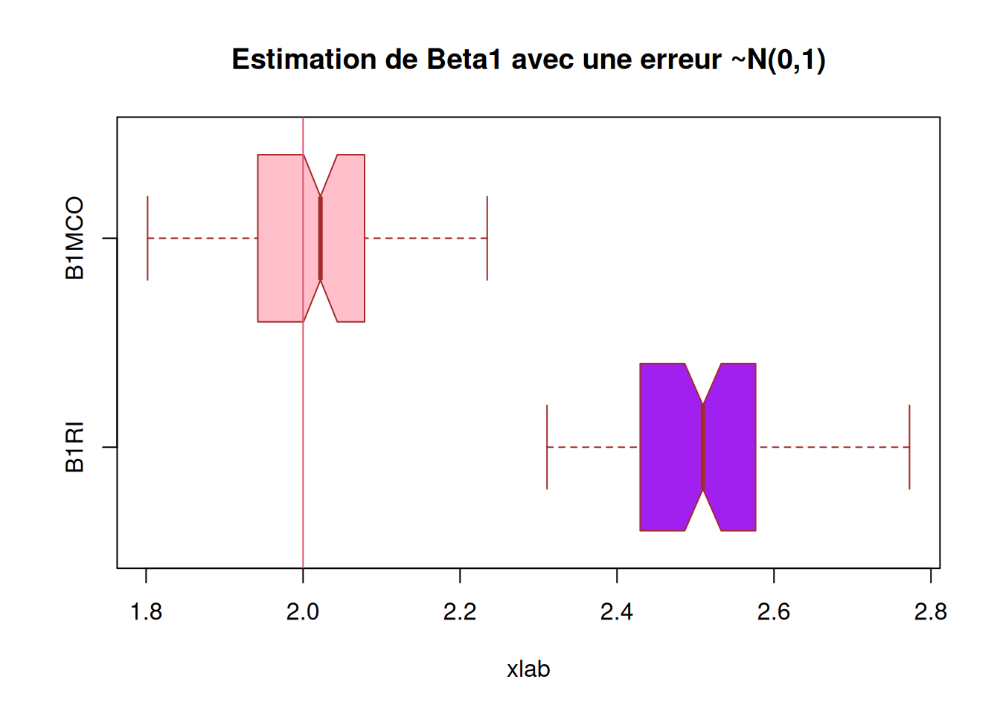
########### Question 6) ##############
X_data$B1RI2 = 0
X_data$B0RI2 = 0
for (i in 1:100){
X_data$B1RI2[i] = beta1_RI(X_data$x, 10 + 2*X_data$x + rnorm(100, 0, 16))
X_data$B0RI2[i] = beta0_RI(as.numeric(X_data$x), as.numeric(10 + 2*X_data$x + rnorm(100, 0, 16)))
}
X_data$B1MCO2 = 0
X_data$B0MCO2 = 0
for (i in 1:100){
X_data$B1MCO2[i] = beta1_MCO(X_data$x, 10 + 2*X_data$x + rnorm(100, 0, 16))
X_data$B0MCO2[i] = beta0_MCO(as.numeric(X_data$x), as.numeric(10 + 2*X_data$x + rnorm(100, 0, 16)))
}
boxplot(X_data$B0RI2, X_data$B0MCO2,
main = "Estimation de Beta0 avec une erreur ~N(0,16)",
xlab = "xlab",
#ylab = "",
names = c("B0RI", "B0MCO"),
col = c("purple","pink"),
border = "brown",
horizontal = TRUE,
notch = TRUE)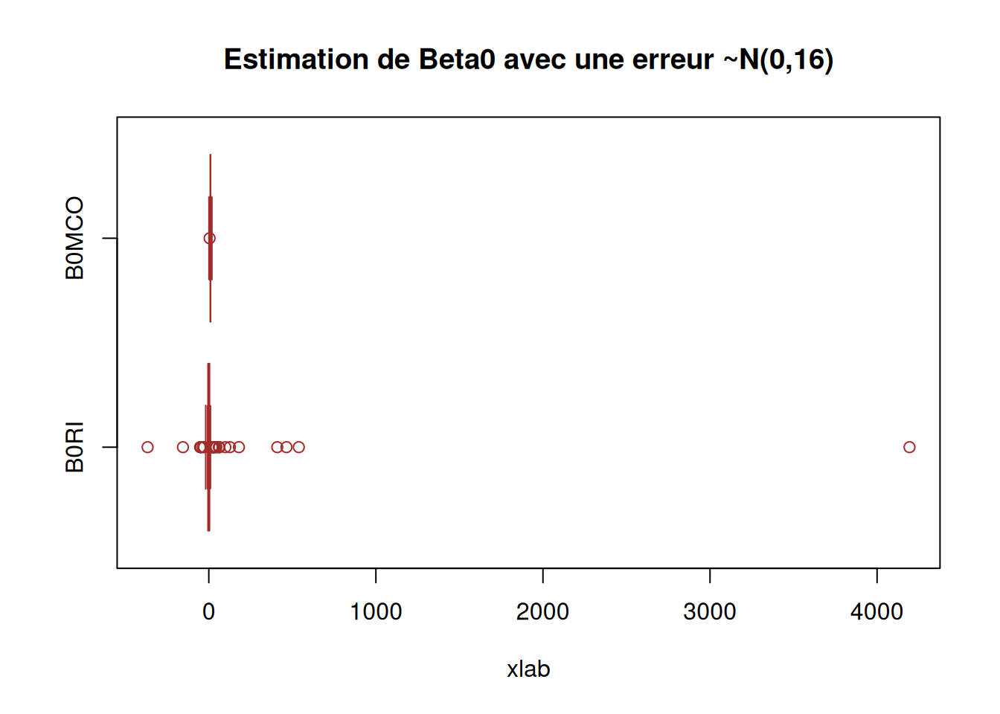
boxplot(X_data$B1RI2, X_data$B1MCO2,
main = "Estimation de Beta1 avec une erreur ~N(0,16)",
xlab = "xlab",
#ylab = "",
names = c("B1RI", "B1MCO"),
col = c("purple","pink"),
border = "brown",
horizontal = TRUE,
notch = TRUE)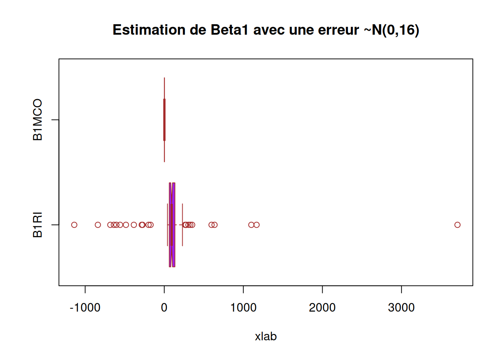
########### Question 5) Corrigé ##############
B = 10000
n = length(X_data$x); n[1] 100res = matrix(0, ncol=4, nrow=B)
dim(res)[1] 10000 4for (b in 1:B){
eps = rnorm(n)
y = 10 + 2 * X_data$x + eps
res[b,] = c(beta1_MCO(X_data$x, y), beta0_MCO(X_data$x, y), beta1_RI(X_data$x, y), beta0_RI(X_data$x, y))
}
boxplot(res[,c(1,3)],
main = 'Comparaison des pentes',
names = c('MCO', 'RI'))
abline(h = 2, col = 2)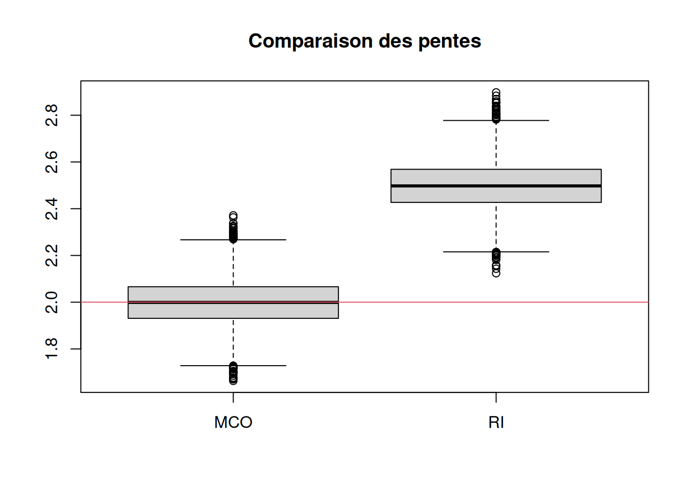
Calcul du biais et de la variance.
#### faire apparaitre biais et variance ####
# calcul du biais
biaisbeta1MCO = mean(res[,1] - 2)
variancebeta1MCO = (1/B) * sum((res[,1] - 2)**2)
biaisbeta0MCO = (1/B) * sum(res[,2] - 2)
variancebeta0MCO = (1/B) * sum((res[,2] - 2)**2)
biaisbeta1RI = (1/B) * sum(res[,3] - 2)
variancebeta1RI = (1/B) * sum((res[,3] - 2)**2)
biaisbeta0RI = (1/B) * sum(res[,4] - 2)
variancebeta0RI = (1/B) * sum((res[,4] - 2)**2)
biaisbeta1MCO[1] -0.001515478#[1] 0.0007703197
variancebeta1MCO[1] 0.01000797#[1] 0.01003526
biaisbeta0MCO[1] 8.001214#[1] 7.999521
variancebeta0MCO[1] 64.02936#[1] 64.00262
biaisbeta1RI[1] 0.4978257#[1] 0.4995708
variancebeta1RI[1] 0.2584821#[1] 0.2605581
biaisbeta0RI[1] 7.948585#[1] 7.946902
variancebeta0RI[1] 63.18995#[1] 63.16354
#####
boxplot(res[,c(2,4)],
main = "Estimation de Beta0 avec une erreur ~N(0,1)",
xlab = "xlab",
#ylab = "",
names = c("B0MCO", "B0RI"),
col = c("purple","pink"),
border = "brown",
horizontal = TRUE,
notch = TRUE)
abline(v = 10, col = 2)boxplot(res[,c(1,3)],
main = "Estimation de Beta1 avec une erreur ~N(0,1)",
xlab = "xlab",
#ylab = "",
names = c("B1MCO", "B1RI"),
col = c("purple","pink"),
border = "brown",
horizontal = TRUE,
notch = TRUE)
abline(v = 2, col = 2)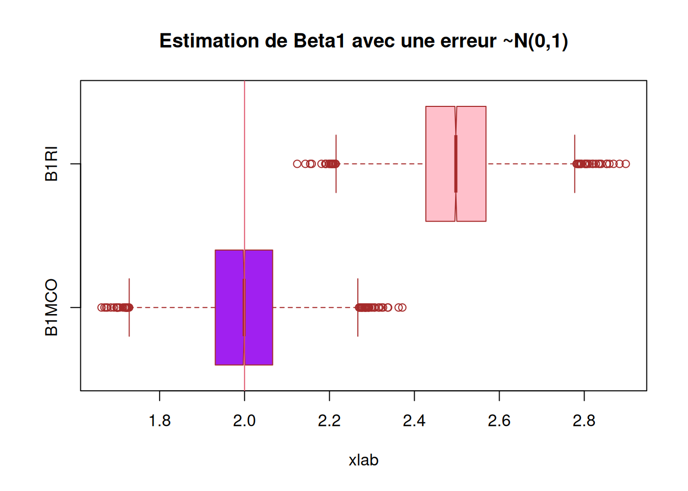
## On voit que c'est des estimateurs sans biais
########### Question 6) Corrigé ##############
res2 = matrix(0, ncol=4, nrow=B)
for (b in 1:B){
eps = rnorm(n, 0, 16)
y = 10 + 2 * X_data$x + eps
res2[b,] = c(beta1_MCO(X_data$x, y), beta0_MCO(X_data$x, y), beta1_RI(X_data$x, y), beta0_RI(X_data$x, y))
}
boxplot(res2[,c(2,4)],
main = "Estimation de Beta0 avec une erreur ~N(0,16)",
xlab = "xlab",
#ylab = "",
names = c("B0MCO", "B0RI"),
col = c("purple","pink"),
border = "brown",
horizontal = TRUE,
notch = TRUE)
abline(v = 10, col = 2)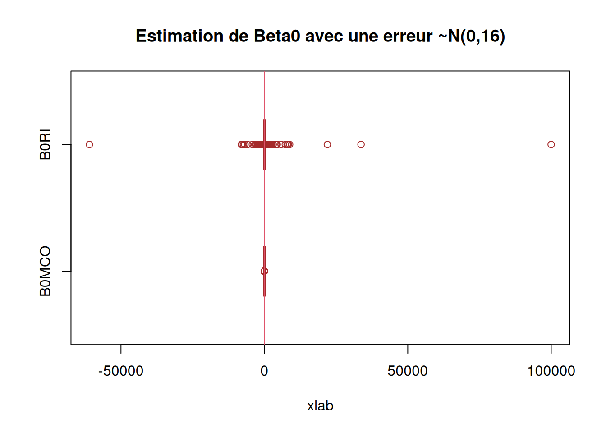
boxplot(res2[,c(1,3)],
main = "Estimation de Beta1 avec une erreur ~N(0,16)",
xlab = "xlab",
#ylab = "",
names = c("B1RI", "B1MCO"),
col = c("purple","pink"),
border = "brown",
horizontal = TRUE,
notch = TRUE)
abline(v = 2, col = 2)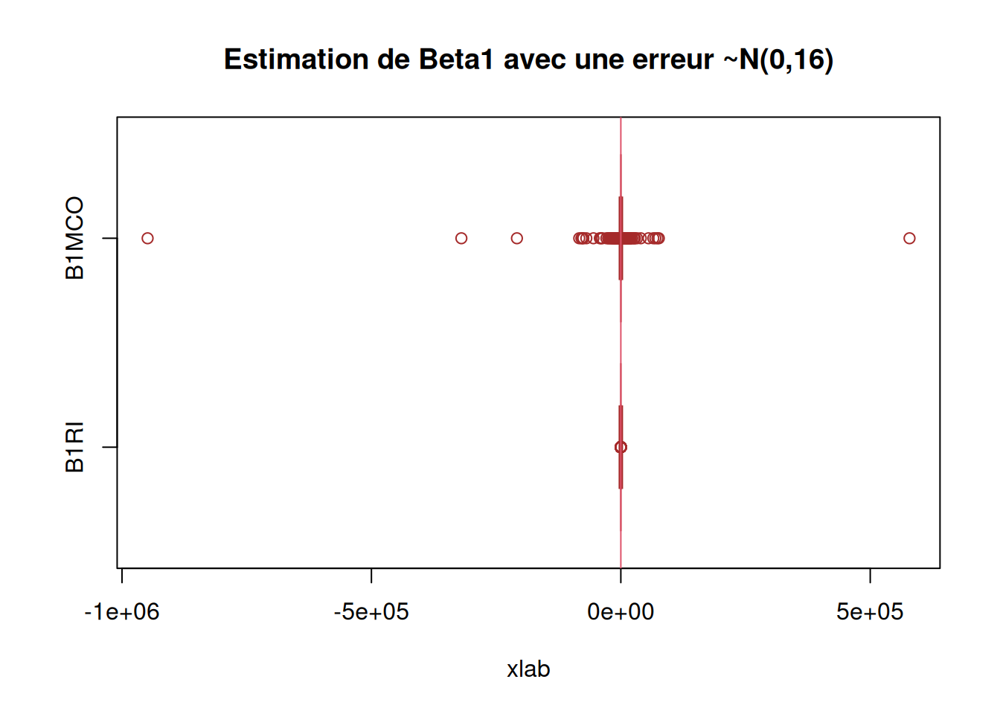
METTRE LES REMARQUES
METTRE LES POINTS D’ATTENTION
Résultats
METTRE LES CONCLUSIONS
# sessioninfo::session_info(pkgs = "attached")######################### Exercice 4 ###########################################
################################################################################
######################### Partie 1 ####
#######################################
########### Question 3) ##############
beta1MCO = function( x, y ){
S(x,y)/S(x,x)
}
beta0MCO = function( x, y ){
mean(y) - beta1MCO(x, y) * mean(x)
}
########### Question 4) ##############
beta1RI = function( x, y ){
S(y,y)/S(x,y)
}
beta0RI = function( x, y ){
mean(y) - beta1RI(x, y) * mean(x)
}
########### Question 5) ##############
library(readr)
data <- readr::read_csv("../Data/X.txt")New names:
Rows: 100 Columns: 2
── Column specification
──────────────────────────────────────────────────────── Delimiter: "," dbl
(2): ...1, x
ℹ Use `spec()` to retrieve the full column specification for this data. ℹ
Specify the column types or set `show_col_types = FALSE` to quiet this message.
• `` -> `...1`# View(data)
beta1 = 2
beta0 = 10
# On créer une variable epsilon que l'on complète de 100 valeurs (taille de X)
# qui sont des observation obtenue suivant une loi gaussienne (0, 1)
data$epsilon <- rnorm(100, 0, 1)
# on construit la variable des Yi
data$Y = 10 + 2*data$x + data$epsilon
# on fait nos estimateur MCO inverses
beta1RI(data$x, 10 + 2*data$x + rnorm(100, 0, 1))Error in S(y, y): impossible de trouver la fonction "S"beta0RI(as.numeric(data$x), as.numeric(10 + 2*data$x + rnorm(100, 0, 1)))Error in S(y, y): impossible de trouver la fonction "S"#> beta1RI(as.numeric(data$x), as.numeric(data$Y))
#[1] 2.500503
#> beta0RI(as.numeric(data$x), as.numeric(data$Y))
#[1] 9.892161
beta1MCO(as.numeric(data$x), as.numeric(data$Y))Error in S(x, y): impossible de trouver la fonction "S"beta0MCO(as.numeric(data$x), as.numeric(data$Y))Error in S(x, y): impossible de trouver la fonction "S"#> beta1MCO(as.numeric(data$x), as.numeric(data$Y))
#[1] 1.843383
#> beta0MCO(as.numeric(data$x), as.numeric(data$Y))
#[1] 9.89286
## nos esimateurs sont pas loin des beta1 et beta0
data$B1RI = 0
data$B0RI = 0
for (i in 1:10000){
data$B1RI[i] = beta1RI(data$x, 10 + 2*data$x + rnorm(100, 0, 1))
data$B0RI[i] = beta0RI(as.numeric(data$x), as.numeric(10 + 2*data$x + rnorm(100, 0, 1)))
}Error in S(y, y): impossible de trouver la fonction "S"data$B1MCO = 0
data$B0MCO = 0
for (i in 1:10000){
data$B1MCO[i] = beta1MCO(data$x, 10 + 2*data$x + rnorm(100, 0, 1))
data$B0MCO[i] = beta0MCO(as.numeric(data$x), as.numeric(10 + 2*data$x + rnorm(100, 0, 1)))
}Error in S(x, y): impossible de trouver la fonction "S"boxplot(data$B0RI, data$B0MCO,
main = "Estimation de Beta0 avec une erreur ~N(0,1)",
xlab = "xlab",
#ylab = "",
names = c("B0RI", "B0MCO"),
col = c("purple","pink"),
border = "brown",
horizontal = TRUE,
notch = TRUE)
abline(v = 10, col = 2)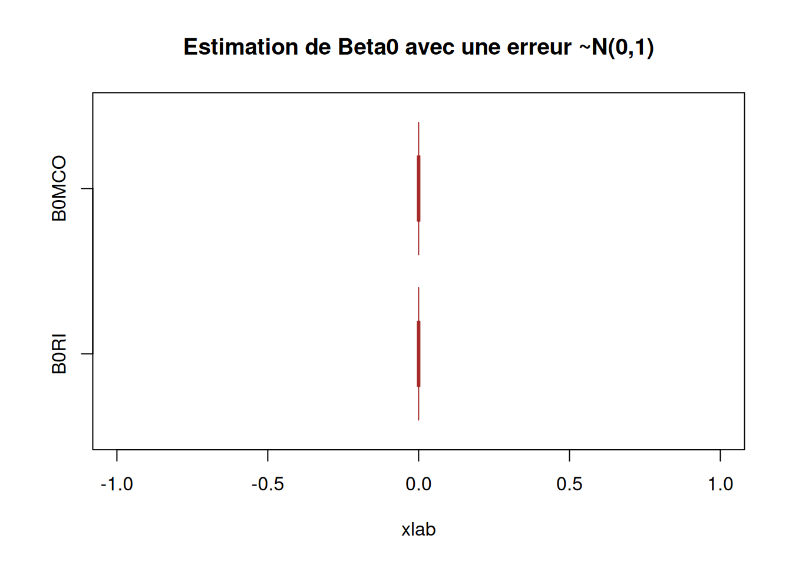
boxplot(data$B1RI, data$B1MCO,
main = "Estimation de Beta1 avec une erreur ~N(0,1)",
xlab = "xlab",
#ylab = "",
names = c("B1RI", "B1MCO"),
col = c("purple","pink"),
border = "brown",
horizontal = TRUE,
notch = TRUE)
abline(v = 2, col = 2)########### Question 6) ##############
data$B1RI2 = 0
data$B0RI2 = 0
for (i in 1:10000){
data$B1RI2[i] = beta1RI(data$x, 10 + 2*data$x + rnorm(100, 0, 16))
data$B0RI2[i] = beta0RI(as.numeric(data$x), as.numeric(10 + 2*data$x + rnorm(100, 0, 16)))
}Error in S(y, y): impossible de trouver la fonction "S"data$B1MCO2 = 0
data$B0MCO2 = 0
for (i in 1:10000){
data$B1MCO2[i] = beta1MCO(data$x, 10 + 2*data$x + rnorm(100, 0, 16))
data$B0MCO2[i] = beta0MCO(as.numeric(data$x), as.numeric(10 + 2*data$x + rnorm(100, 0, 16)))
}Error in S(x, y): impossible de trouver la fonction "S"boxplot(data$B0RI2, data$B0MCO2,
main = "Estimation de Beta0 avec une erreur ~N(0,16)",
xlab = "xlab",
#ylab = "",
names = c("B0RI", "B0MCO"),
col = c("purple","pink"),
border = "brown",
horizontal = TRUE,
notch = TRUE)boxplot(data$B1RI2, data$B1MCO2,
main = "Estimation de Beta1 avec une erreur ~N(0,16)",
xlab = "xlab",
#ylab = "",
names = c("B1RI", "B1MCO"),
col = c("purple","pink"),
border = "brown",
horizontal = TRUE,
notch = TRUE)########### Question 5) Corrigé ##############
B = 10000
n = length(data$x); n[1] 100res = matrix(0, ncol=4, nrow=B)
dim(res)[1] 10000 4for (b in 1:B){
eps = rnorm(n)
y = 10 + 2 * data$x + eps
res[b,] = c(beta1MCO(data$x, y), beta0MCO(data$x, y), beta1RI(data$x, y), beta0RI(data$x, y))
}Error in S(x, y): impossible de trouver la fonction "S"boxplot(res[,c(1,3)],
main = 'Comparaison des pentes',
names = c('MCO', 'RI'))
abline(h = 2, col = 2)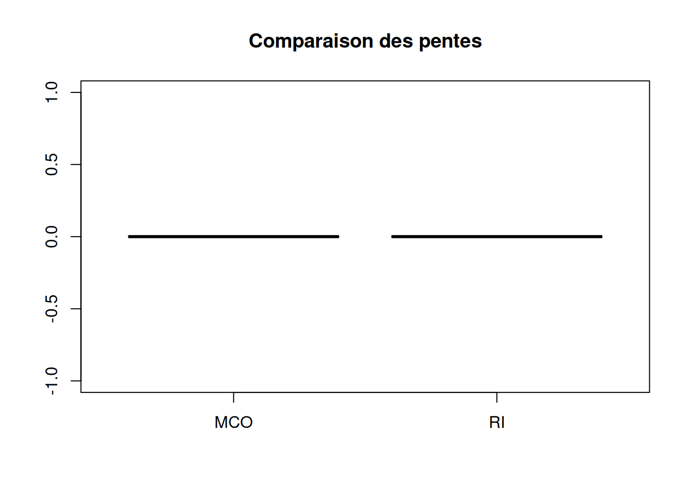
#### faire apparaitre biais et variance ####
# calcul du biais
biaisbeta1MCO = mean(res[,1] - 2)
variancebeta1MCO = (1/B) * sum((res[,1] - 2)**2)
biaisbeta0MCO = (1/B) * sum(res[,2] - 2)
variancebeta0MCO = (1/B) * sum((res[,2] - 2)**2)
biaisbeta1RI = (1/B) * sum(res[,3] - 2)
variancebeta1RI = (1/B) * sum((res[,3] - 2)**2)
biaisbeta0RI = (1/B) * sum(res[,4] - 2)
variancebeta0RI = (1/B) * sum((res[,4] - 2)**2)
biaisbeta1MCO[1] -2#[1] 0.0007703197
variancebeta1MCO[1] 4#[1] 0.01003526
biaisbeta0MCO[1] -2#[1] 7.999521
variancebeta0MCO[1] 4#[1] 64.00262
biaisbeta1RI[1] -2#[1] 0.4995708
variancebeta1RI[1] 4#[1] 0.2605581
biaisbeta0RI[1] -2#[1] 7.946902
variancebeta0RI[1] 4#[1] 63.16354
#####
boxplot(res[,c(2,4)],
main = "Estimation de Beta0 avec une erreur ~N(0,1)",
xlab = "xlab",
#ylab = "",
names = c("B0MCO", "B0RI"),
col = c("purple","pink"),
border = "brown",
horizontal = TRUE,
notch = TRUE)
abline(v = 10, col = 2)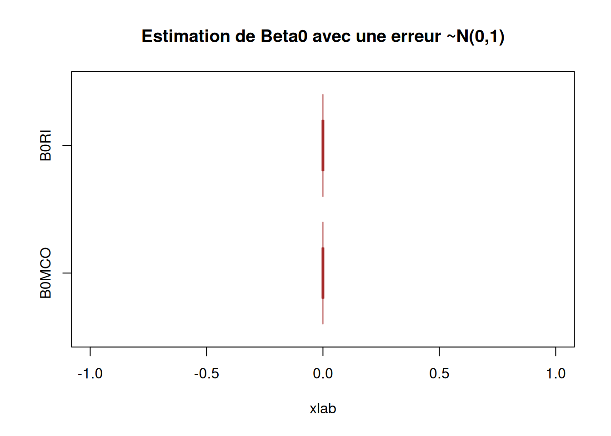
boxplot(res[,c(1,3)],
main = "Estimation de Beta1 avec une erreur ~N(0,1)",
xlab = "xlab",
#ylab = "",
names = c("B1MCO", "B1RI"),
col = c("purple","pink"),
border = "brown",
horizontal = TRUE,
notch = TRUE)
abline(v = 2, col = 2)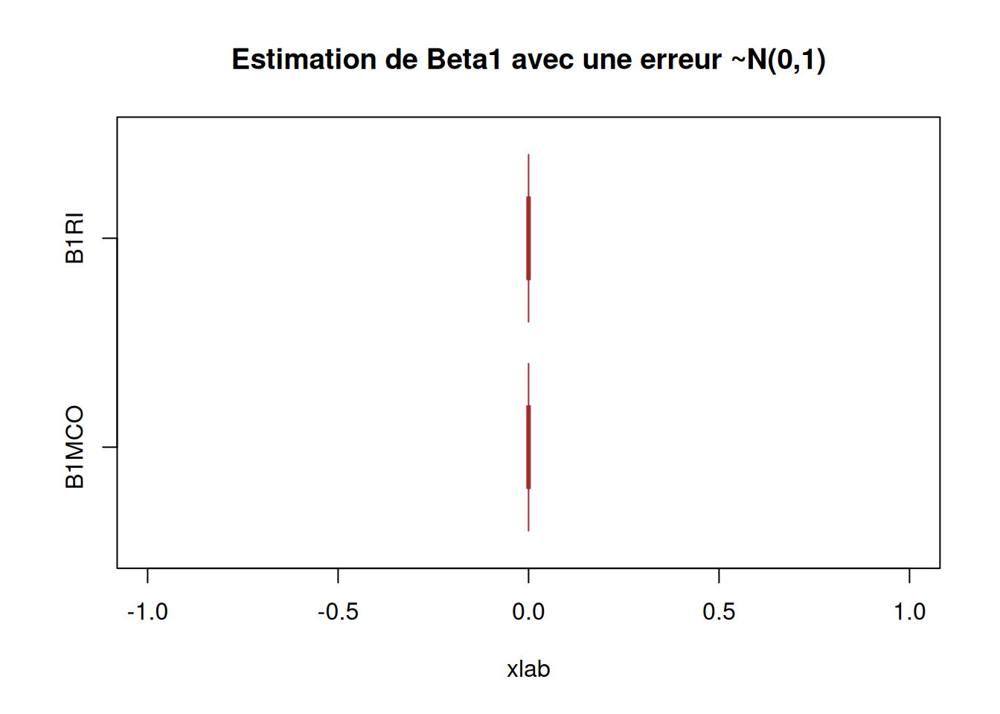
## On voit que c'est des estimateurs sans biais
########### Question 6) Corrigé ##############
res2 = matrix(0, ncol=4, nrow=B)
for (b in 1:B){
eps = rnorm(n, 0, 16)
y = 10 + 2 * data$x + eps
res2[b,] = c(beta1MCO(data$x, y), beta0MCO(data$x, y), beta1RI(data$x, y), beta0RI(data$x, y))
}Error in S(x, y): impossible de trouver la fonction "S"boxplot(res2[,c(2,4)],
main = "Estimation de Beta0 avec une erreur ~N(0,16)",
xlab = "xlab",
#ylab = "",
names = c("B0MCO", "B0RI"),
col = c("purple","pink"),
border = "brown",
horizontal = TRUE,
notch = TRUE)
abline(v = 10, col = 2)boxplot(res2[,c(1,3)],
main = "Estimation de Beta1 avec une erreur ~N(0,16)",
xlab = "xlab",
#ylab = "",
names = c("B1RI", "B1MCO"),
col = c("purple","pink"),
border = "brown",
horizontal = TRUE,
notch = TRUE)
abline(v = 2, col = 2)
######################### Partie 2 ####
#######################################
########### Question 1) ##############
library(readr)
ozone <- read_csv("1. Workspace/Master IS/M1/Régression linéaire et logistique/TD et TP/ozone.csv")Error: '1. Workspace/Master IS/M1/Régression linéaire et logistique/TD et TP/ozone.csv' does not exist in current working directory ('/home/clement/Documents/1_Projet/Perso/Regression_lineaire_et_logistique/posts').View(ozone)Error: objet 'ozone' introuvablelibrary(ggplot2)
ggplot(ozone) +
aes(x = ozone$T12, y = ozone$O3) +
geom_point(colour = 'purple') +
geom_smooth(formula = y~x, colour="red", method="lm") +
#geom_smooth(formula = x~y, method = "lm") +
ylab("Concentration en ozone") +
xlab("Température") +
ggtitle("Nuage de points du jeu de données Ozone")Error: objet 'ozone' introuvablel = lm(ozone$O3~ozone$T12, data = ozone)Error in eval(mf, parent.frame()): objet 'ozone' introuvablel$coefficientsError: objet 'l' introuvablesummary(l)Error: objet 'l' introuvable#l'intercept c'est beta0 estimé et
# l'autre valeur c'est la pente beta 1
# on a donc beta1hat 2.7010
#on sait que beta1hatRI = Syy / Sxy alors que beta1hatMCO = Sxy/Sxx
lRI = lm(ozone$T12~ozone$O3, data = ozone) # on inverse les roles X et YError in eval(mf, parent.frame()): objet 'ozone' introuvablelRI$coefficientsError: objet 'lRI' introuvablel2 = 1 / lRI$coefficients[2] Error: objet 'lRI' introuvablel2Error: objet 'l2' introuvable#9.67831
plot(ozone$O3, ozone$T12,
main = "titre",
sub = eq)Error: objet 'ozone' introuvableabline(l, col="blue")Error: objet 'l' introuvableabline(lRI, col="red")Error: objet 'lRI' introuvable########### Corrigé ##############
plot(x<-ozone$T12,y<-ozone$O3,pch=20,xlab="Température",
ylab="Ozone")Error: objet 'ozone' introuvableabline(lm(y~x),col=2,lty=2,lwd=2)Error in eval(predvars, data, env): objet 'x' introuvableb2<-1/coef(lm(x~y))[2]Error in eval(predvars, data, env): objet 'x' introuvablea2<-mean(y)-b2*mean(x)Error: objet 'b2' introuvableabline(a=a2,b=b2,col=3,lty=3,lwd=2)Error: objet 'a2' introuvablepoints(mean(x), mean(y), pch=21, col=4) # affichage du point moyenError: objet 'x' introuvablelegend("topleft",c("MCO","RI"),lty=2:3,col=2:3,cex=0.8)
## les deux droites de regression passent par le point moyen